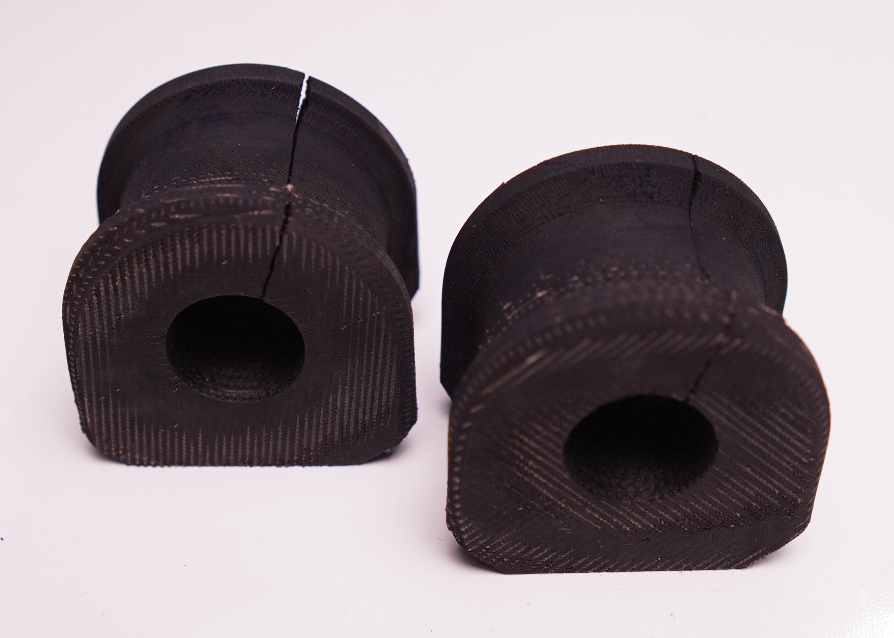

MESMA LINHA.MEDIDAS DIFERENTES.
Sprinter 515 · Barra estabilizadora traseira

27 mm
KIT10211

30 mm
KIT10212

33 mm
KIT10324
Medidas distintas. Confira a referência.Imagem ilustrativa da comparação, sem escala dimensional.
Sprinter 515 · Barra estabilizadora traseira
